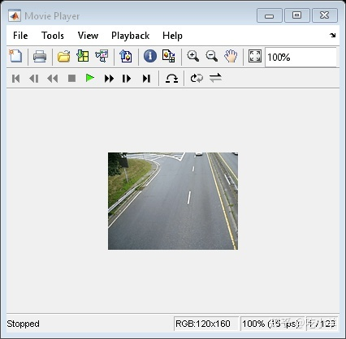
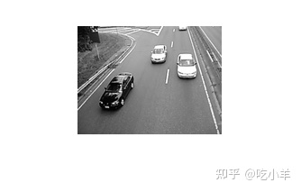
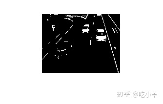

Home
本示例展示了如何使用 Image Processing Toolbox™ 来可视化和分析视频或图像序列。示例使用VideoReader(MATLAB®)、implay和其他图像处理工具箱函数来检测交通视频中的浅色汽车。请注意，它VideoReader具有特定于平台的功能，在某些平台上可能无法读取提供的 Motion JPEG2000 视频。
步骤 1：使用 VideoReader 访问视频
VideoReader函数构造了一个多媒体阅读器对象，可以从多媒体文件中读取视频数据。
trafficVid = VideoReader('traffic.mj2')
trafficVid =
VideoReader with properties:
General Properties:
Name: 'traffic.mj2'
Path: '/mathworks/devel/bat/Bdoc21a/build/matlab/toolbox/images/imdata'
Duration: 8
CurrentTime: 0
NumFrames: 120
Video Properties:
Width: 160
Height: 120
FrameRate: 15
BitsPerPixel: 24
VideoFormat: 'RGB24'
get 方法提供有关视频的更多信息，例如以秒为单位的持续时间。
get(trafficVid)
obj =
VideoReader with properties:
General Properties:
Name: 'traffic.mj2'
Path: '/mathworks/devel/bat/Bdoc21a/build/matlab/toolbox/images/imdata'
Duration: 8
CurrentTime: 0
NumFrames: 120
Video Properties:
Width: 160
Height: 120
FrameRate: 15
BitsPerPixel: 24
VideoFormat: 'RGB24'
第 2 步：使用 IMPLAY 浏览视频
浏览implay中的视频。
implay('traffic.mj2');

第 3 步：算法开发
在处理视频数据时，从视频中选择一个有代表性的帧并在该帧上开发算法会很有帮助。然后，该算法可以应用于视频中所有帧的处理。
对于此汽车标记应用程序，请检查包含浅色和深色汽车的帧。当图像有很多物体时——例如在交通视频帧中——在尝试检测感兴趣的对象之前尽可能地简化图像是有用的。为汽车标记应用程序执行此操作的一种方法是抑制图像中所有不是浅色汽车的对象（深色汽车、车道、草地等）。通常，需要结合多种技术来移除这些无关对象。
从视频帧中删除深色汽车的一种方法是使用imextendedmax函数。此函数返回一个二值图像，该图像标识强度值高于指定阈值的区域，称为区域最大值。图像中像素值低于此阈值的所有其他对象将成为背景。要消除深色汽车，请确定图像中这些对象的平均像素值。（rgb2gray用于将原始视频从 RGB 转换为灰度）您可以使用像素区域工具implay查看像素值。调用imextendedmax时指定平均像素值（或稍高的值）作为阈值。对于此示例，将值设置为 50。
darkCarValue = 50; darkCar = rgb2gray(read(trafficVid,71)); noDarkCar = imextendedmax(darkCar, darkCarValue); imshow(darkCar) figure, imshow(noDarkCar)


在处理后的图像中，请注意大多数深色汽车物体是如何被移除的，但许多其他无关物体仍然存在，尤其是车道标记。区域最大值处理不会删除车道标记，因为它们的像素值高于阈值。要移除这些对象，您可以使用形态学函数imopen。此函数使用形态学处理从二值图像中删除小对象，同时保留大对象。使用形态学处理时，您必须决定操作中使用的结构元素的大小和形状。由于车道标线是细长的物体，因此请使用半径与车道标线宽度相对应的圆盘形结构元素。您可以使用implay中的像素区域工具估计这些物体的宽度。对于此示例，将值设置为 2。
sedisk = strel('disk',2);
noSmallStructures = imopen(noDarkCar, sedisk);
imshow(noSmallStructures)
要完成该算法，请使用regionprops找到noSmallStructures（应该只是浅色汽车）中对象的质心。使用此信息将标签定位在原始视频中的浅色汽车上。
第 4 步：将算法应用于视频
汽车标记应用程序在循环中一次处理一帧视频。（由于典型视频包含大量帧，因此一次读取和处理所有帧需要大量内存。）
一个小视频（如本例中的视频）可以立即处理，并且有许多函数可以提供此功能。
为了加快处理速度，请预先分配用于存储已处理视频的内存。
nframes = trafficVid.NumberOfFrames;
I = read(trafficVid, 1);
taggedCars = zeros([size(I,1) size(I,2) 3 nframes], class(I));
for k = 1 : nframes
singleFrame = read(trafficVid, k);
% Convert to grayscale to do morphological processing.
I = rgb2gray(singleFrame);
% Remove dark cars.
noDarkCars = imextendedmax(I, darkCarValue);
% Remove lane markings and other non-disk shaped structures.
noSmallStructures = imopen(noDarkCars, sedisk);
% Remove small structures.
noSmallStructures = bwareaopen(noSmallStructures, 150);
% Get the area and centroid of each remaining object in the frame. The
% object with the largest area is the light-colored car. Create a copy
% of the original frame and tag the car by changing the centroid pixel
% value to red.
taggedCars(:,:,:,k) = singleFrame;
stats = regionprops(noSmallStructures, {'Centroid','Area'});
if ~isempty([stats.Area])
areaArray = [stats.Area];
[junk,idx] = max(areaArray);
c = stats(idx).Centroid;
c = floor(fliplr(c));
width = 2;
row = c(1)-width:c(1)+width;
col = c(2)-width:c(2)+width;
taggedCars(row,col,1,k) = 255;
taggedCars(row,col,2,k) = 0;
taggedCars(row,col,3,k) = 0;
end
end
第 5 步：可视化结果
获取原始视频的帧率并在implay中查看taggedCars。
frameRate = trafficVid.FrameRate; implay(taggedCars,frameRate);
======================================================================
我的测试结果及程序
下面是我测试的代码：

注：本文根据MATLAB官网内容修改而成。